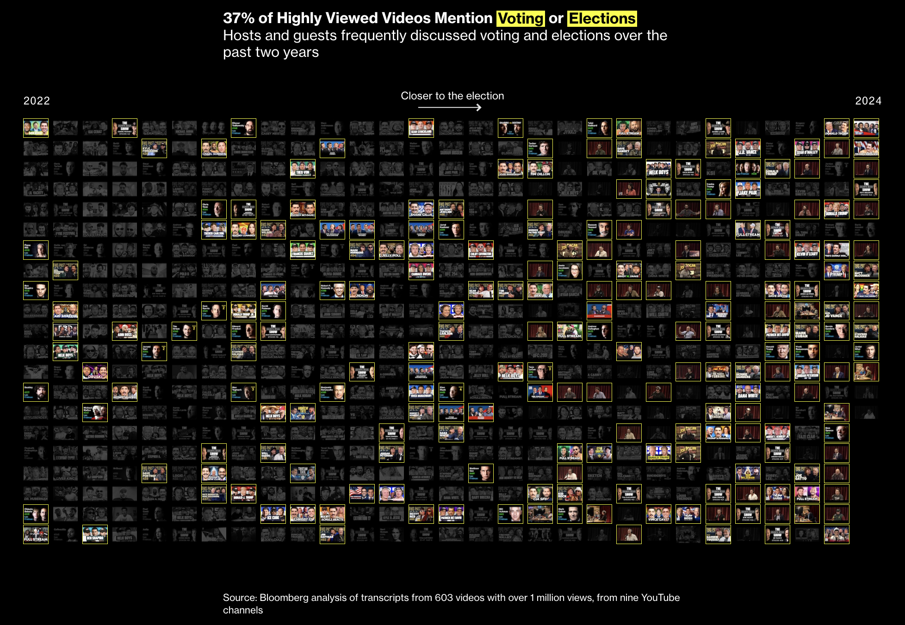

Classification with LLMs
When we hear terms like hate speech, terrorism, or NSFW, you probably have a mental image of what that looks like.
However, when publishing an article or developing a methodology, precise language is everything – especially with terminology that our reporting builds upon.
Davey Alba and I have a long-running joke that every story we work on amounts to “annotation journalism,” as we always end up labeling and then counting something.
In this section we’ll walk through how to determine testable categories manually, scale the process using reproducible rubrics and automation, and how to verify labels for publication.
Annotation Journalism
In the aftermath of the 2024 U.S. Presidential Election, traditional media outlets were dubbing President Trump’s win the “podcast election” thanks to another internet thing.
To dig in deeper, our reporting team watched hundreds of hours of videos from nine YouTube podcasters and livestreamers to understand their strategy, messaging, and cultural appeal.
We focused on the types of guests featured – whether they were comedians, athletes, musicians, or Internet celebrities – and how often political topics such as voting, war, and transgender identity were discussed.

Manual labor is a good thing
To do this, we manually extracted which guests appeared in each video by each YouTube show, and created a keyword list for the common themes we encountered.
A strong starting place for reporting borrows from sociology and digital ethnography: engaging directly with the source material. In our case it meant watching hours of video over and over again.
Manual groundwork helps identify testable patterns and stumble upon resonant examples that could stick with readers.
Discussing what you see with your reporting team helps solidify themes and arrive at a logical narrative. Although this kind of work can be a slog, making time for these tasks can improve the quality of your work.
In computational social science, topic modeling is one way to segment bodies of text thematically; however, it is an unsupervised and probabilistic algorithm – there is no answer key and results can differ between runs. It’s worth knowing, but it’s often used for exploratory analysis.
Keywords and expertise
After getting a handle on what these shows and their guests discussed, we consulted subject-matter experts on our guest categories, political topics, and related keywords. Researchers helped us incorporate overlooked topics and hone our keyword lists.
As livestreams can be over 8 hours long, analyzing transcripts with paid AI tools can be expensive and time-consuming.
Keyword matching is fast and virtually free of charge. Although keyword matching is crude, it works well for a proof of concept and can be built-upon to produce publication-ready findings.
In our investigation, we searched the transcripts for keywords related to the political topics we had identified. We reviewed segments containing each keyword to confirm the topic was discussed and root out false positives.
Most transcription tools will organize transcripts into manageable segments with timestamps. With this information we can generate a link to the exact moment of a quote in a video.
1. TRANSCRIPT SEGMENT
{"video_id": "To-4jtSzw8U", "start": 887.5, "end": 888.9,
"text": "Older people probably will vote for Biden."}
│
▼
2. KEYWORD MATCH (regex)
kw_voting = ["vote", "election", "ballot"] → HIT
│
▼
3. SPREADSHEET OF HITS with timestamped links
youtube.com/watch?v=To-4jtSzw8U&t=887s
│
▼
4. VERIFY click the link in the spreadsheet, watch the clip on YouTube
│
▼
5. LABEL
video_id | text | youtube_url | contains_voting? | annotator | comment
To-4jtSzw8U | Older p… | https://… | TRUE | LY |
Verification is the name of the game, as we need to be confident that our headline statistic is solid. I use automation (in this case keyword matching) to scale out searching for patterns previously identified through manual review. Confirming also tends to be much faster than trying to label videos from scratch.
Write an instruction manual called a “codebook” to define categories and how to handle edge cases. This is a concept from social science to standardize labels across annotators.
Subjective categories will inevitably differ. Intercoder reliability determines how often annotators agree.
When to use LLMs?
You may be wondering: why not throw a language model at the problem and call it a day?
LLMs are not a hammer to throw at every problem. They are neither magic nor sci-fi “enhance” functions. Using any technical tool is a matter of finding the most reliable and least-bad solution to a problem.
For example, categorizing something as “political” is not straightforward. Besides elected officials and elections, what constitutes political?
No matter what technical approach you choose, break the problem up into manageable pieces and employ pseudocode to sequence and organize your approach in plain English. Rock climbers call this “beta” for a route prior to getting on the wall.
As AI assistants make most software coding tasks trivial, our strength as investigators lies in the questions we ask. How do we assess vulnerabilities in our logic? Are our questions driven by a hypothesis? What assumptions are left unsaid, and how could they mislead readers? What are edge cases that undermine the hypothesis or break the system we designed?
“Tell me if this is political” is too blunt. Concrete categories like “elections and voting,” “immigration,” or “war” yield more precise results, and avoid the assumptions that loaded terms carry.
For now, let’s look at an example of classifying text using a local language model and verifying the results in an annotation interface.
Tutorial
Now let’s classify whether transcript segments mention voting or elections using a local language model. We will compare this method to keyword matching, and verify the labels by hand to produce a validation dataset.
- Set up Ollama and the Python packages.
- Load a sample of podcast transcripts.
- Flag segments that mention voting with a keyword search.
- Label the same segments with a local language model.
- Compare the two approaches.
- Verify the flagged segments by hand and compare annotators.
Setup
We will use Ollama to run the qwen language model locally on your machine.
brew install ollama
ollama serve
ollama pull qwen3.5:4bInstall the Python packages: the Ollama Python library, Pydantic, and pandas.
pip install ollama pydantic pandasimport os
import glob
import json
import gzip
import pandas as pd
from ollama import chat
from pydantic import BaseModelLoad the transcripts
Here we will work with a sample of transcripts taken from YouTube stored in Whisper’s JSON format (a common AI transcription tool).
It is a subset of videos from one podcast.
fn_transcripts = "data/classification/input/full_send_segments_sample.json.gz"
transcripts = json.load(
gzip.open(fn_transcripts, "rt")
)
df = pd.json_normalize(
transcripts, record_path="segments", meta=["video_id"]
)Keyword matching
Here’s a simplified keyword list:
kw_voting = [
'vote', 'election', 'ballot'
]
df['contains_voting_kw'] = df['text'].str.contains(
'|'.join(kw_voting), regex=True, case=False
)Classifying with a language model
Pydantic allows us to define a data schema for the language model’s output. This is way better than what I used to do by defining this within a prompt, as we can use Ollama’s format parameter directly (read the documentation).
class VotingLabel(BaseModel):
"""
This defines the data schema of the LLM response
"""
contains_voting_llm: bool | None
quote: strNow we will feed each transcript segment through the local language model and compile the labels.
dir_labels = "data/classification/intermediary/voting_labels/"
os.makedirs(dir_labels, exist_ok=True)
for i, row in df.iterrows():
# save one label per transcript segment as a record
fn_out = dir_labels + f"{row['video_id']}-{row['id']}.json"
if not os.path.exists(fn_out):
prompt = f"Does this podcast transcript mention elections or voting?\n\n{row.text}"
response = chat(
model="qwen3.5:4b",
messages=[{
"role": "user",
"content": prompt
}],
format=VotingLabel.model_json_schema(),
think=False,
)
label = VotingLabel.model_validate_json(
response.message.content
)
with open(fn_out, "w") as f:
f.write(label.model_dump_json())Read the language model labels into a dataframe, and get a breakdown on the labels.
labels = []
for fn in glob.glob(dir_labels + "*.json"):
video_id, segment_id = fn.split("/")[-1].split(".json")[0].rsplit("-", 1)
with open(fn) as f:
label = json.load(f)
labels.append({"video_id": video_id, "id": int(segment_id), **label})
df_labels = pd.DataFrame(labels)
df_labels['contains_voting_llm'].value_counts()contains_voting_llm
False 109
True 91
Name: count, dtype: int64Comparing our two approaches
We can see where the two approaches agreed by looking down the diagonal. The disagreement rate, where one method got a hit and the other did not, is less than 10%:
(11 + 5) / 200 = 8%
# line up keyword hits and llm labels by segment
df_merged = df.merge(df_labels, on=["video_id", "id"], how="left")
pd.crosstab(
df_merged["contains_voting_kw"],
df_merged["contains_voting_llm"],
margins=True,
)| contains_voting_llm | False | True | All |
|---|---|---|---|
| contains_voting_kw | |||
| False | 98 | 5 | 103 |
| True | 11 | 86 | 97 |
| All | 109 | 91 | 200 |
Neither method is the answer key, and just because they agree it doesn’t mean it’s correct.
That’s where hand labeling comes in.
Verifying by hand
Verification is necessary prior to publication. You could either publish the method’s classification accuracy rate from a subsample of the data, or exhaustively annotate every record, or every “True” hit, to get a lower bound.
Both approaches involve manual data annotations – or “coding” in social science terms (labeling, not programming). Starting with a small subset early in the process creates a “golden set” to use as a performance benchmark for your classification system.
Here we will verify every segment that was labeled contains_voting by either the keywords or the language model. This is the “lower-bound” verification, that will tell us at least how many segments in the sample contain the topic.
fn_to_annotate = "data/classification/intermediary/voting_to_annotate.csv"
# every segment either method flagged, without the labels, so annotators label blind
df_to_annotate = df_merged[
df_merged["contains_voting_kw"] | (df_merged["contains_voting_llm"] == True)
]
df_to_annotate[["video_id", "id", "start", "end", "text"]].to_csv(
fn_to_annotate, index=False
)
len(df_to_annotate)102Here’s an example of a data annotation interface with basic functionality. In my experience, hot-key mapping and single verification tasks help reduce the time needed to verify labels.
The “interesting” flag saves anecdotes to review and use in publication, whereas “skip” can be used to mark edge cases to discuss with annotators.
The annotation interface should be super simple by default, but provide the ability to drill in further for context. In this case you can actually watch the time-stamped clip. For text, for example, you could show an abbreviated segment and allow for expanding to the full text or more metadata.
When running such tasks, I tend to use a command-line tool written in Python (the user interface above is purely demonstrative). These are fairly straightforward to vibe-code, and if your reporting team has an AI coding assistant installed you can just send them the codebase and dataset and have it set up easily.
Here’s the Python script for reference.
Keeping this task entirely local – including the classification itself – ensures data does not get read by private AI firms and other tech platforms. This is a requirement if the data you’re working with is sensitive.
Some annotation platforms you can also check out, if you don’t want to start from scratch: Prodigy, Frisket
Comparing annotators
Every labels file in data/classification/hand/ is compared by reviewer. To add your own, place your file in that directory: scripts/classification/label_segments.py saves there already, and the CSV you download from the tool above can be moved there. The directory comes with two synthetic annotators and a reference set to compare against. Each reviewer name should appear in only one file.
dir_hand = "data/classification/hand/"
files_labels = glob.glob(dir_hand + "*.csv")
data = []
for fn in files_labels:
_df = pd.read_csv(fn, dtype=str, keep_default_na=False)
data.extend(_df.to_dict(orient="records"))
df_annotations = pd.DataFrame(data)
del data
# one row per segment, one column per reviewer. a blank answer is a skip
df_wide = df_annotations.pivot(
index=["video_id", "id"], columns="reviewer", values="contains_voting_human"
).replace("", "skip")
col_reviewers = df_wide.columns.tolist()Here we can compare the agreement rate as well as the range the headline results could change.
has_skip = (df_wide[col_reviewers] == "skip").any(axis=1)
has_same_answer = df_wide[col_reviewers].nunique(axis=1) == 1
df_wide["is_unanimous"] = has_same_answer & ~has_skip
answered = df_wide[col_reviewers].isin(["True", "False"]).sum()
share_true = (df_wide[col_reviewers] == "True").sum() / answered
print(f"Reviewers agreed on {df_wide['is_unanimous'].mean():.0%} of segments")
print(f"Between {share_true.min():.0%} and {share_true.max():.0%} of segments mention voting, depending on the reviewer")Reviewers agreed on 85% of segments
Between 89% and 92% of segments mention voting, depending on the reviewerHere we can review exactly where annotators differed.
df_text = pd.read_csv(fn_to_annotate, dtype=str).set_index(["video_id", "id"])
df_review = df_wide.loc[~df_wide["is_unanimous"], col_reviewers].join(df_text["text"])
display_annotator_diffs(df_review.head(3), col_reviewers)| segment | annotator | ||||
|---|---|---|---|---|---|
| video_id | id | A | B | C | text |
| -re1pB… | 312 | False | True | True | The second thing that was really weird is I I did- they had me do security for the Iraqi poll workers, because you… |
| 2VLBqk… | 11 | False | True | True | Comm is neither left or right. It's about making sure that everybody votes and when you vote, we're making sure that… |
| 2VLBqk… | 121 | skip | False | False | Right now that there was no war declared in Ukraine, even though we're at war with with Russia, right now, they just… |
Based on the disagreements and edge cases that were skipped, finalize the labels for this dataset. You may revise your annotation codebook or the classification algorithm at this point. You can scale up this entire process if you want to verify all the records by hand.
Further reading
Supervised machine learning is an essential topic to know. It is out of scope for this section, read documentation from Scikit-Learn and check out the textbook co-written by one of the main contributors Andreas C. Müller.
Citation
To cite this chapter, please use the following BibTeX entry:
@incollection{yin2026classification,
author = {Yin, Leon},
title = {Classification with LLMs},
booktitle = {Inspect Element: A practical guide to data investigations},
year = {2026},
editor = {Yin, Leon and Sapiezynski, Piotr},
note = {\url{https://inspectelement.org}}
}